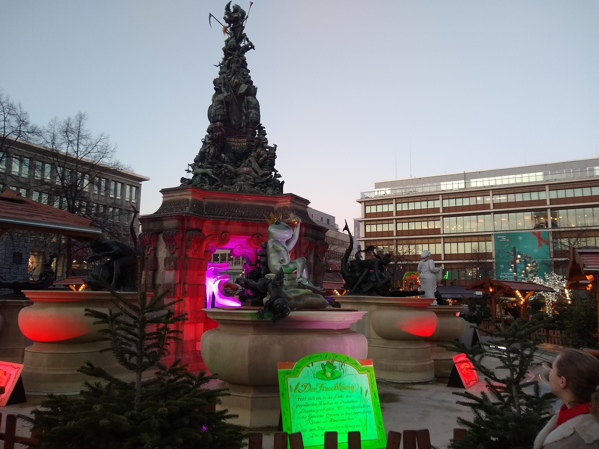
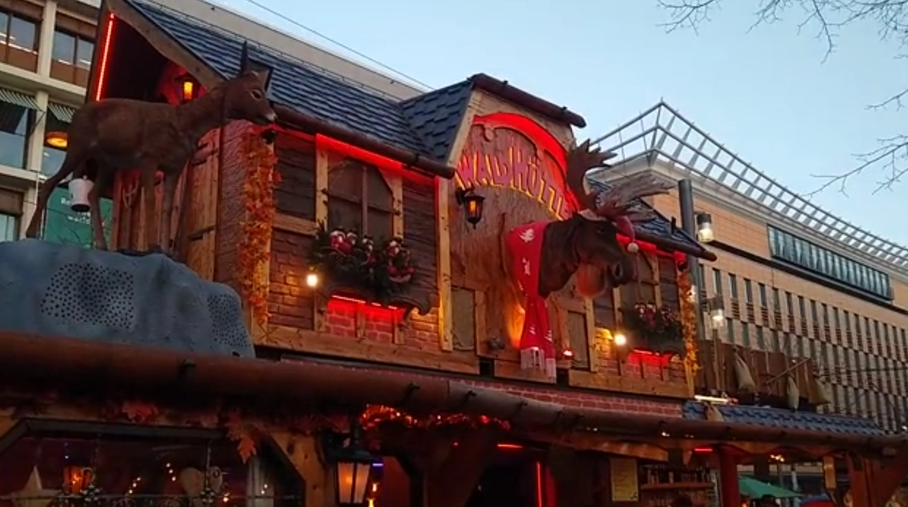
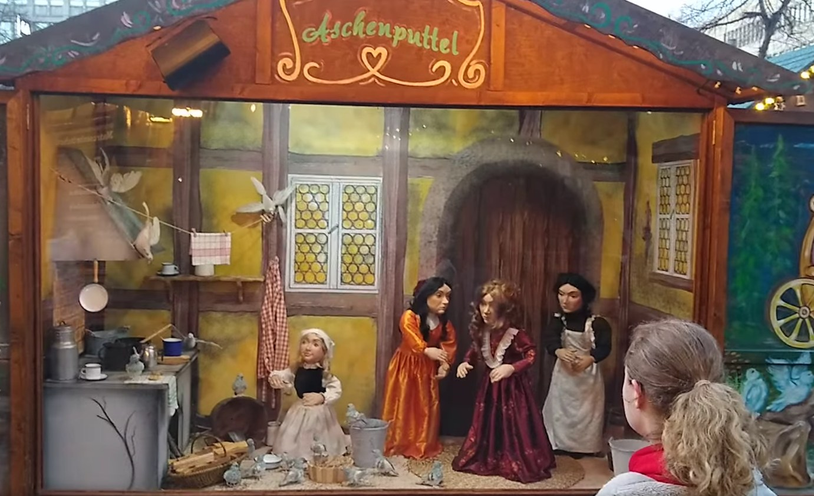
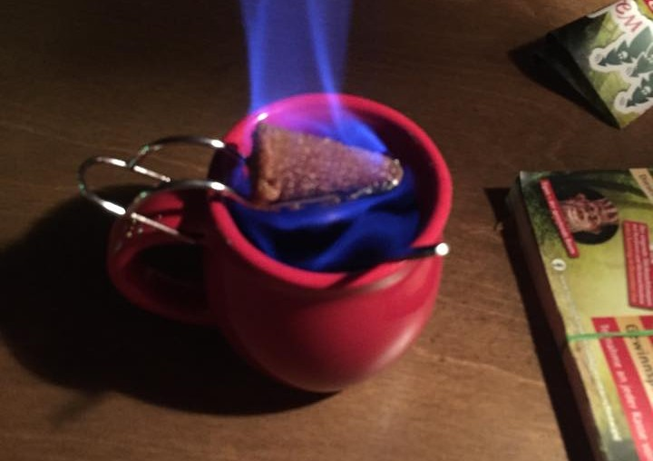
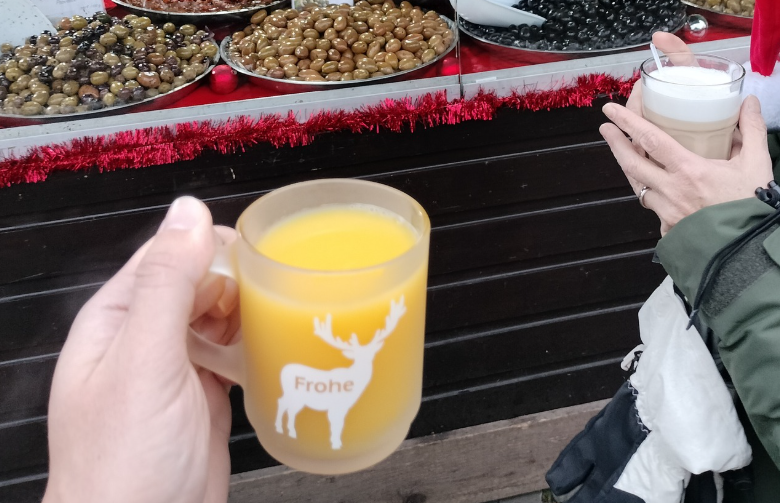

MANNHEIM
*
GERMANY
A Winter Wonderland
"Der Froschkonig" aka The Frog King in Mannheim.
Mannheim, Germany, is my favorite city because of its incredible Christmas market. While many Christmas markets rely on traditional wooden stalls and twinkling lights, Mannheim takes it to another level with animatronics that bring classic fairy tales to life. As you walk through the market, you'll see moving figures reenacting scenes from stories like Rumpelstiltskin, Cinderella, Frog Prince and Hansel and Gretel, making the entire place feel like a living storybook. But one of the most unexpected and amusing sights was an animatronic moose head mounted on a wall, singing about Canada in German. This quirky addition is part of a tradition at some German Christmas markets, where talking moose heads, often named "Moose Mortimer" or something similar, entertain visitors with festive songs. The Canada theme likely comes from Germany's fascination with North American wilderness and folk culture, which has influenced certain holiday decorations and entertainment. It was completely random but added a fun, whimsical touch to the already magical atmosphere.
Of course, no Christmas market experience is complete without traditional holiday drinks, and Mannheim's market had some of the best. One of the highlights was Gluhwein, a hot mulled wine made with red wine, citrus, and spices. What made it special in Mannheim was that it was prepared as Feuerzangenbowle, a more theatrical version where a sugar cube is soaked in alcohol, set on fire, and dripped into the wine, creating a rich, caramelized sweetness with an extra kick. In addition to Gluhwein, there was also Eierpunsch, a warm egg-based punch made with egg yolks, vanilla, rum, and spices like cinnamon. It's served hot and topped with whipped cream, making it a creamy, comforting winter drink. Between the festive drinks, the enchanting fairy tale displays, and the unexpected singing moose, Mannheim's Christmas market was an unforgettable holiday experience that made the city my favorite.
Read more about Mannheim on Wikipedia.Pictures
Animatronic moose and deer singing about Canada in German.

Animatronic Cinderella ("Aschenputtel") scene.

Feuerzangenbowle

Eierpunsch
Three Facts About Mannheim
- Mannheim's Christmas market is among the oldest and largest in Germany, attracting thousands of visitors each year.
- The market features approximately 160 stalls, offering a wide range of handcrafted goods, from traditional Christmas decorations to unique artisan products.
- Catering to families, the market includes children's rides like antique merry-go-rounds and trains, as well as daily performances by regional choirs and dance groups.
Statistics About Mannheim
| Category | Details |
|---|---|
| Annual Visitors | Over 300,000 people |
| Christmas Market Duration | Late November - December 23 |
| Daily Operating Hours | 11:00 AM - 9:00 PM |
| Location | Around the historic Water Tower (Wasserturm) |